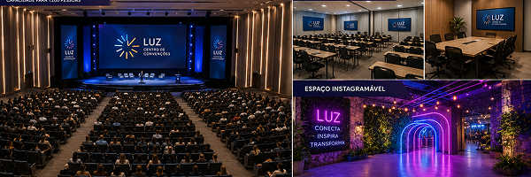

Você foi selecionada para o Encontro das Criadoras.
Apenas as participantes confirmadas receberão o kit Exclusivo.

Imagem ilustrativa do Centro de Convenções Luz — auditório principal, salas de workshop, espaço instagramável e praça de alimentação.
| Horário | Atividade | Local | Duração |
|---|---|---|---|
| 09:00 | Credenciamento e retirada do kit | Hall de entrada | 30 min |
| 09:30 | Palestra de abertura com a criadora convidada | Auditório principal | 40 min |
| 10:30 | Workshop: Como gravar e editar vídeos | Sala Criativa 1 | 1 hora |
| 11:30 | Workshop: Fotografia com celular | Sala Criativa 2 | 1 hora |
| 12:30 | Pausa para almoço — Praça de alimentação | Área externa | 1 hora |
| 13:30 | Desafio: Crie um conteúdo em 30 minutos | Espaço colaborativo | 30 min |
| 14:00 | Premiação dos melhores conteúdos | Palco principal | 30 min |
| 14:30 | Sessão de fotos e encerramento | Espaço instagramável | 30 min |
| Categoria | Prêmio | Benefício Extra |
|---|---|---|
| Criadora Destaque | Ring light profissional + R$ 1.500 | Divulgação no perfil oficial do evento |
| Melhor Edição | Microfone lapela + R$ 800 | Mentoria com editor profissional |
| Conteúdo Criativo | Kit de maquiagem + R$ 500 | Collab com criadora famosa |
| Revelação | Tripé flexível + R$ 300 | Curso online de criação de conteúdo |
| Voto Popular | Mochila personalizada | Post patrocinado nas redes sociais |
Festival de Criadoras — Organização Oficial
Endereço: Avenida das Artes, 500 — São Paulo, SP
Contato: contato@festivalcriadoras.com